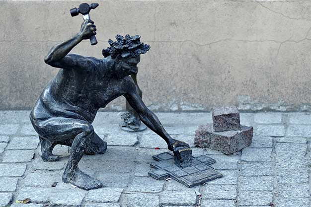
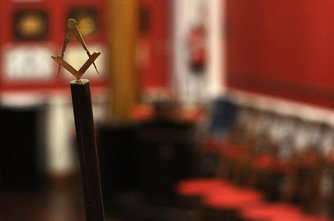

Historia Logia "Compañeros del Silencio" N°328
 La Respetable Logia "Compañeros del Silencio" N°328 levantó columnas en 1917 en Comandante Nicanor Otamendi. Funcionando desde su primer momento en la sede de San Martin 3237 de Mar del Plata, perteneciente a La Augusta y Respetable Logia "7 de Junio de 1891" N°110. En 1919 cambio su nombre a "Aquiles Ballori" y en 1922 abatio columnas incorporandose todos sus miembros a la logia Marplatense "7 de junio de 1891". Su presidente y fundador fue Luis Torriccelli.
En noviembre de 2021, nueve maestros pertenecientes a tres logias que funcionan en la sede de San Martin 3237, resuelven: "Relevantar columnas" de la respetable Logia "Compañeros del Silencio"
Nos encontramos
Logia "Compañeros del Silencio" n°328 | Tel: (0223) 495-0209 | San Martín 3237, Mar del Plata, Argentina
Declaracion Constitutiva de la Respetable Logia “Compañeros del Silencio” nº 328
 “Trabajar bajo los auspicios de la Gran Logia de la Argentina de Libres y Aceptados Masones con el Rito Escocés Antiguo y Aceptado, inicialmente los primeros y terceros lunes de cada mes, a las 20:00 hs en la sede ubicada en la calle San Martín 3237 de la ciudad de Mar del Plata, Provincia de Buenos Aires.
Comprometer sus trabajos con el fortalecimiento de la tolerancia y el libre pensamiento en todos sus niveles, aplicando y accionando – siempre en el marco de la G.·.L.·. de la Argentina de LL.·. y AA.·. MM.·.- a efectos de generar ciudadanos libres, pensantes, racionales y virtuosos.
Colaborar junto a sus Logias Hermanas “7 de Junio de 1891” nº110, “Teodoro Bronzini” nº 545 y “Giuseppe Garibaldi” nº 610 en el fortalecimiento y creación de Logias en la Zona 3.
Trabajar en el Marco de “Masonería Marplatense” junto a la totalidad de las Logias que lo integran.
Colaborar con la Gran Logia en la expansión y consolidación de la Masonería Argentina en todo el territorio nacional”.